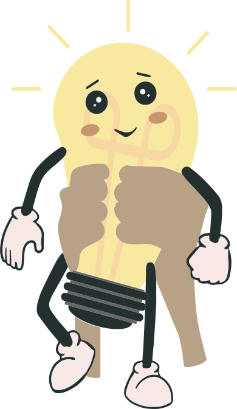
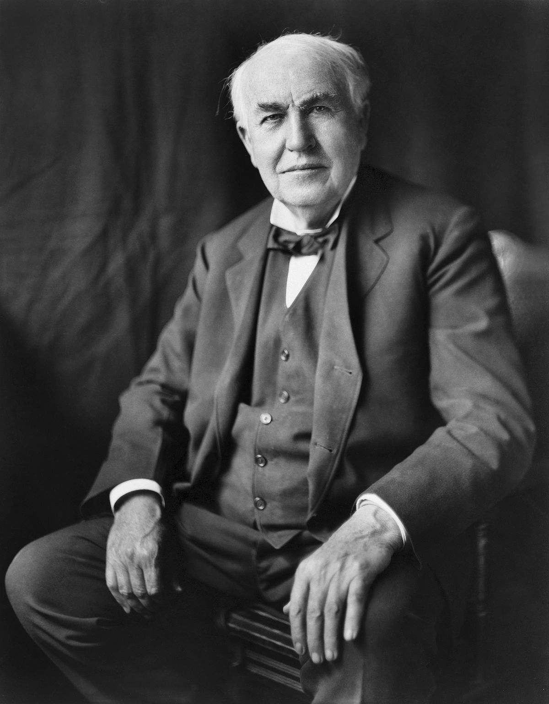
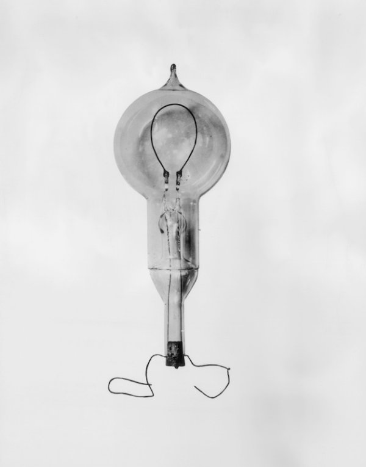

Thomas Edison patented the first commercially successful light bulb in 1879, but the story begins long before. The history of electricity Electricity is a form of energy and it occurs in nature, so it was not “invented.” Ancient Greeks
discovered static electricity in about 600 BC. At ancient Roman sites pots with sheets of copper inside were found. Similar “battery” devices were found near Baghdad that time.

×

Fig.1 - Thomas Edison
In 1600, the English physician William Gilbert used the Latin word “electricus” and a few years later Thomas Browne, another English scientist, used the word “electricity” to describe the force that certain substances exert when rubbed
against each other. In 1752, Ben Franklin proved that lightning and tiny electric sparks were the same. The Italian Inventor Alessandro Volta developed the voltaic pile, the first practical method of generating electricity, in
1800. A light bulb was born With the invention of the voltaic pile the first electric lamp was invented by connecting voltaic piles to charcoal electrodes. Davy´s invention was called the electric arc lamp. Even though, it was an
improvement and the principles behind Davy´s invention was the foundation for many other electric lamps and bulbs, it was not ready yet for use at home. Swan vs. Edison

Fig.2 - Thomas Edison's light bulb
In 1850 Joseph Swan invented a light bulb by enclosing carbonized paper filaments in an evacuated glass bulb. By the lack of a good vacuum pumps back then and experimenting with materials he finally developed a long-lasting light bulb
in 1878. Thomas Edison continued to test several types of materials and discovered that carbonized bamboo filament could last over 1200 hours. This was the beginning of the commercially manufactured light bulbs.